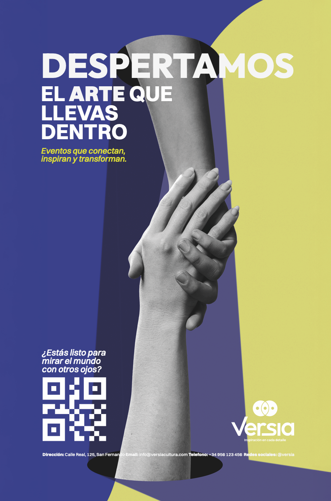
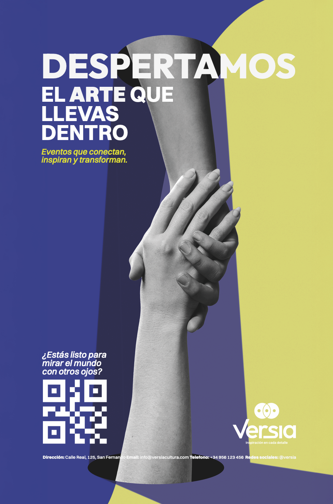
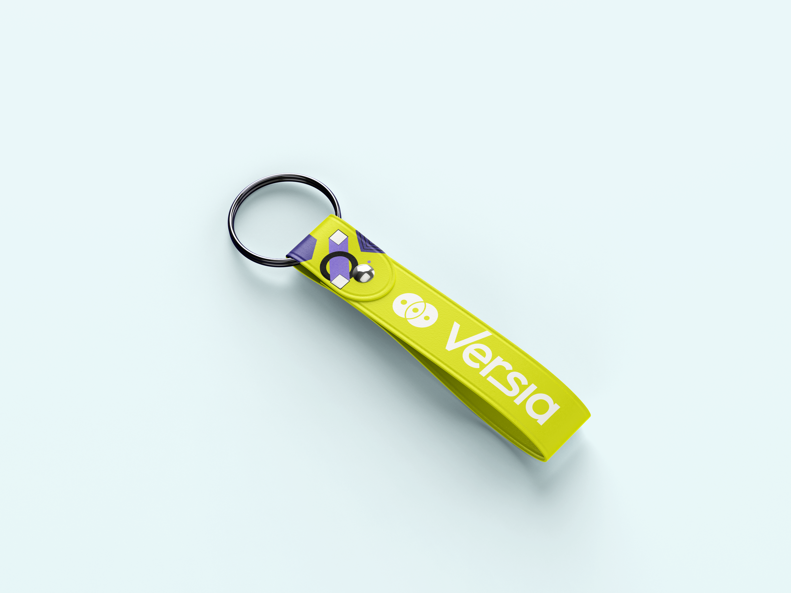
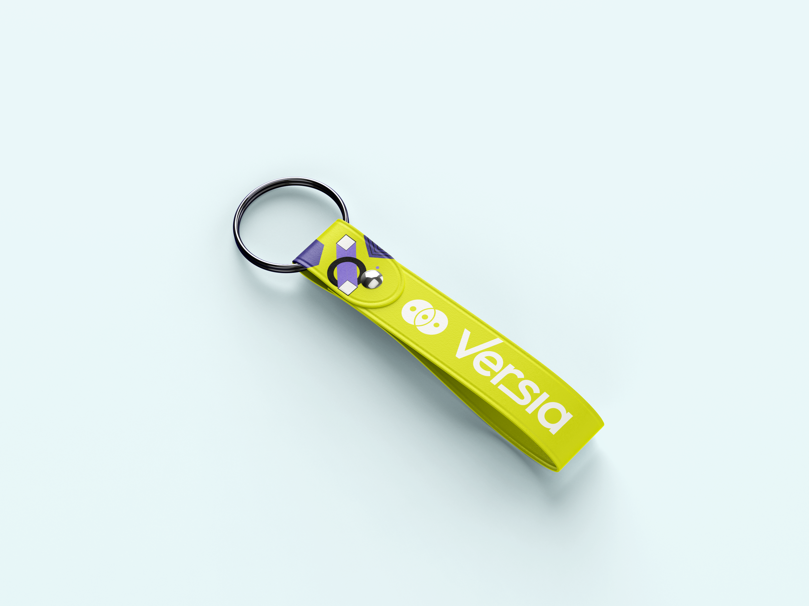

Proyectos de Branding
VERSIA
Versia necesitaba diferenciarse en un sector tecnológico saturado, donde la
mayoría de marcas se perciben frías y distantes.
El reto fue encontrar una voz propia que transmitiera cercanía y humanidad sin perder frescura
ni innovación.
La respuesta fue una identidad audaz y extravagante, que rompe los códigos establecidos
y transforma la tecnología en experiencias memorables, conectando con las personas desde lo
inesperado.


 

 

ALZALI
ALZALI nació como una marca de té inspirada en la esencia mística de la Alhambra.
El desafío estaba en destacar dentro de un mercado repleto de propuestas genéricas,
sin renunciar a la elegancia y la calidad.
La solución fue un branding evocador y narrativo, en el que cada té cuenta una historia
y convierte la experiencia de consumo en un viaje cultural y sensorial.